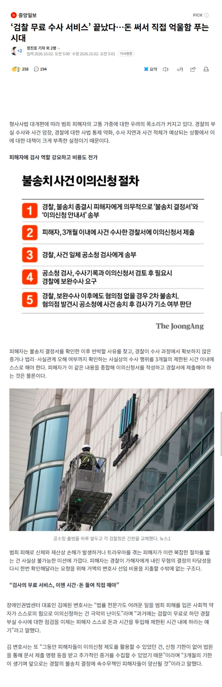

요약:
피해자는 불송치 결정서를 확인한 이후 반박할 사유를 찾고, 경찰이 수사 과정에서 확보하지 않은 증거나 법리·사실관계 오해 여부까지 확인하는 사실상의 수사 행위를 3개월의 제한된 시간 이내에 스스로 해야 한다.

요약:
피해자는 불송치 결정서를 확인한 이후 반박할 사유를 찾고, 경찰이 수사 과정에서 확보하지 않은 증거나 법리·사실관계 오해 여부까지 확인하는 사실상의 수사 행위를 3개월의 제한된 시간 이내에 스스로 해야 한다.
뭐 어쩌겠음 다 국민의 선택인데..
정사판에선 잘했다는데?
원래 침묵하는거야
내앞에 오기전까진
줴줴이야
애들 밤에 게임하는거 막겠다는 지랄병 같은 셧다운제도 폐지하는데 10년 걸렸는데
일단 해보고 보완해 나가면 된다? 그동안 피해입은 사람들만 억울하고 돈쓰는거지 뭐
그냥 검찰에 소장 직빵으로 접수 할 수 있던 때가 제일 좋았는데 시바꺼
그때도 검찰가면 제대로 되는거 경찰에 접수하면 자체종결 때린다고 개지랄 났어는데 도대체 뭘 경찰의 뭘 믿고ㅅㅂㅋㅋ
돌려차기 사건 피해자가 했던 말이 생각나네
변호사 수임료 떡상중이잖아 그래서
읍읍읍 ㅋㅋㅋ 왜 없앴을까 읍읍읍
아 제발 찬성한 새끼들 집안에 형사사건 피해자 생기게해주세요... 존나 답답하다 그냥
엥 개꿀인데 ㅋㅋ
그간 검사가 일 조까치해도 내 의견 1도 반영 안된거
내가 직접 이의제기 가능해진거잖아
어차피 지피티 딸깍이면 변호사도 필요 없는데 개꿀이뉴 ㅋ
역대급 병신짓이라 검찰청으로 돌아오게 되있음
국민(호남)의 90퍼가 찬성한거 아님?
겠냐. 이나라 전체 인구에 절반들은 누구겠냐
여론조사에서 반대 많이 나왔음
검사 너무 권력쌘거 분리한거 잘한거같음
ㅋㅋㅋ
유전무죄
우리나라만 병신같이 조져놨으니 피해는 국민이보겠지 이런버러지같은 나라가 또 없다 ㅋㅋ 딱 국민수준에 맞는 나라네
대탐정시대의 시작
당이 원하는 거니까 해야지ㅋㅋ 암 그렇고 말고
사립탐정이 많아지려나
변호사들 최상위권자 외에는 수천명이 매년 월 이삼백도 못번다는데 이제 의사만큼 벌 예정
진짜 지랄들한다 ㅋㅋㅋ 무소불위의 검찰권력좀 찢어논건데 대가리도 찢어지셨나
그전엔 돈 안든줄아나 ㅎㅎ

요~~이 티~~원!! 아뇨아뇨아뇨아뇨
엄..
별 수 있나...
'내가 심판한다' 시전하세요
경찰이 불송치한 경우에는 이전이랑 똑같음